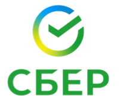
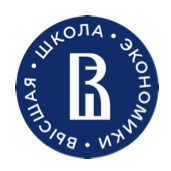
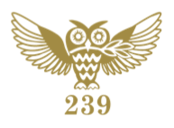

LLM Trainer ↗
Библиотека для обучения языковых моделей GPT, Mamba и xLSTM с поддержкой SFT и оценки качества.
Руководитель направления · Senior AI Engineer
Обучаю продуктовую модель на базе GigaChat для Сбербанк Онлайн и giga.chat. С нуля разрабатываю harness и выстраиваю работу с AI coding assistants через skills, rules, ADR и spec-driven development.

Оценка соблюдения требований к формату аргументов в function calling.
SFT, DPO, синтетические данные, генерация диалогов, tool calling. GPT, Mamba, xLSTM.
Бенчмарки, LLM-as-a-Judge, кастомные метрики, автоматическая валидация, организация разметки.
Harness, skills, rules, ADR, spec-driven development, разработка с AI coding assistants.
PyTorch, Transformers, LangChain, LangGraph, ChromaDB, OpenAI API, Pandas, NumPy.
Python, SQL, C++ · FastAPI, Flask · Git, Linux, Docker.
Статистика, теория вероятностей, линейная алгебра, математический анализ. Русский — родной, английский — C1.
Библиотека для обучения языковых моделей GPT, Mamba и xLSTM с поддержкой SFT и оценки качества.
Генерация классической музыки с помощью языковых моделей GPT и Mamba.
Модель компьютерного зрения для предсказания следующего хода в шахматах.


Профессионально играю джаз на фортепиано. Занимаюсь спортом.